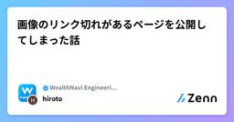

WealthNavi Engineering Blogのフィード
https://zenn.dev/p/wn_engineering
ウェルスナビの開発に関する記事を定期的に発信しています。 「ものづくりする金融機関」への取り組みを知っていただければ幸いです。
フィード

画像のリンク切れがあるページを公開してしまった話
WealthNavi Engineering Blogのフィード
はじめにこんにちは、マーケティング開発チームの鷹野です。今回は、サイト運用業務を行う中で画像のリンク切れがあるページを公開してしまった失敗談と、そこから得た学びをご紹介します。 事象の概要あるWebページの更新対応のリリース後、画像リンク切れが発覚し、該当ページは数十分の間、公開状態でした。対象は1枚の画像問題発覚後すぐに復旧対応を行った普段からアクセスが少ない箇所だったこともあり、外部ユーザからのアクセスはなかった 発生の原因発生原因を調査したところ、以下のような原因が判明しました。 実装の運用方法についてページの更新作業において、見た目が共通して...
4日前

SREチームによるAI活用事例
WealthNavi Engineering Blogのフィード
1. はじめにこんにちは、システム基盤チームでSREをしている安藤と申します。普段はDB負荷の改善、開発者プラットフォーム改善、AIOpsなどに取り組んでいます。今回はSREが所属するシステム基盤チームのAI活用事例と今後の展望をご紹介したいと思います。 システム基盤チームにおけるAIOpsシステム基盤チームにおけるAIOpsとは、AIを活用して日々増大する運用課題を根本から効率化・自動化し、成長フェーズの組織を支えるプラットフォームを実現する取り組みです。私たちは現在、開発組織の拡大とプロダクト数の増加が同時に進む10→100フェーズを迎えており、10倍規模を見据えた基...
11日前
ひやりハットを防ぐ！ArchUnitでスレッドセーフをチェックする方法をご紹介
WealthNavi Engineering Blogのフィード
こんにちは、WealthNaviでバックエンドエンジニアを担当している星原です。今回は「真夏の怪談！ひやりハット特集」というお題に沿って、Spring Bootのデフォルトスコープであるシングルトンについての注意事項とArchUnit[1]を使ったCIパイプラインでの実装チェック方法をご紹介します。 SpringBootにおけるスレッドセーフな実装パターンSpringBootアプリケーションはマルチスレッド環境で動作します。マルチスレッド環境では、複数のHTTPリクエストが同時に処理されるため、スレッドセーフでないコードは予期しない動作やデータ破損を引き起こす可能性があります。...
12日前
地雷を踏んだ日：ステージングではなく本番に上げたあの瞬間
WealthNavi Engineering Blogのフィード
こんにちは、WealthNaviでバックエンド開発を行っている藤原です。今回は「真夏の怪談！ひやりハット特集」ということで入社してから初めてやらかした事件についてお話しさせていただきます。タイトルで察する方もいらっしゃるかもしれませんが、デプロイ関係のインシデントがテーマとなっています。 この記事を読んでほしい対象者コンテナイメージをECRで管理している方及び企業。WealthNaviに入社したい若手エンジニアの方。 事件が起きるまでのいきさつその日は突然やってくる。Fさんはその日、とあるAPIの改修を行っていました。改修を終えた後、変更内容をステージング環境でテ...
19日前
リリース直前にテスト環境のエラーに気づいた話
WealthNavi Engineering Blogのフィード
とある月曜夜の出来事やだなー。怖いなー。そんな思いが頭をかすめたのは、午後7時半。子供をお風呂に入れていた時のことだ。さっき見たSlackの赤い文字が忘れられない。やだなー。怖いなー。そんな思いが何度も頭を巡った。それはテスト環境のエラー通知であった。急いでいたこともあり、誰かが操作を間違えたのだろうと思った。待っていたら誰かが「犯人は俺だ」スタンプをつけるだろうとも思った。しかし、エラーになっていたシステムは普段誰も使わない。夜な夜な粛々と稼働し、存在をあまり気にされない。そんなシステムから発せられたエラー。あのシステムがエラーになる可能性は？まさか今週末リ...
1ヶ月前
ArgoCD Image Updaterで実現する環境別デプロイ戦略
WealthNavi Engineering Blogのフィード
はじめにはじめまして、システム基盤チームでSREをしている安藤と申します。普段はDB負荷の改善、開発者プラットフォーム改善、AIOpsなどに取り組んでいます。今回はEKS上で動く基盤にArgoCD Image Updaterを導入し、実際の運用を通じて得られた知見をご紹介します。 ArgoCD Image UpdaterとはArgoCD Image UpdaterはコンテナレジストリへのイメージPushを検知し、Kubernetesマニフェストのイメージタグを自動更新、もしくはDeploymentを自動再起動できるツールです。 導入背景ここでは導入に至った直近のトラブ...
1ヶ月前
iOSネイティブアプリにDetoxによるE2Eテストを導入
WealthNavi Engineering Blogのフィード
こんにちは、QAの木下です。この記事では、ネイティブモバイルアプリのE2Eテストの自動化に挑戦した話について、紹介します。 モバイルアプリに対して、テストの自動化を目指した経緯 テスト自動化の現状と課題ウェルスナビでは、会社の成長とともに、取り扱うプロダクトの数が増加しています。QAチームは、プロダクト数の増加を受けて、チームメンバー増強の採用活動を強化するとともに、テストの省力化・効率化を目的とした自動化に注力してきました。現在は、Webサイトに対するE2Eテストを行えるテストツールPlaywrightを導入し、膨大なテストケースを省力かつ高速に実行し、不具合を早期に検...
1ヶ月前
Datadog On-Call導入後の運用Tipsを紹介します
WealthNavi Engineering Blogのフィード
はじめにはじめまして、システム基盤チームでSREをしている森と申します。日々の業務で取り組んだことについて紹介いたします。先日開催されたDatadogのユーザーコミュニティイベントでDatadog On-CallについてLT登壇させていただきました。https://datadog-jp.connpass.com/event/349693/!登壇資料はこちらです2025年1月末にGAされ始めて以降ユーザーコミュニティでも何回[1][2]か発表されるほど人気のあるツールで、私が発表した回でも他に発表される人[3]がいるくらいホットなツールです。On-Call運用Tip...
1ヶ月前
ウェルスナビのSREチームの歩みとこれから
WealthNavi Engineering Blogのフィード
はじめにシステム基盤チームのマネージャーの和田です。本記事では、SREが所属するシステム基盤チームのこれまでの歩みと、取り組みについて説明します。サービスをより良くするために日々工夫を重ねている皆さまに、本記事が少しでもヒントや励みになれば幸いです。 ウェルスナビについて当社は「働く世代に豊かさを」というミッションのもと、1兆4,000億円超*1の資産をお預かりするWealthNaviを提供しています。今後は、三菱UFJ銀行と共にデジタルバンクを立ち上げ、保険や年金、住宅ローンなど多様な金融サービスを提供する『総合アドバイザリー・プラットフォーム（MAP）』 を実装し、中立...
1ヶ月前
顔認証時も意図せず呼ばれるapplicationDidBecomeActive() : iOSライフサイクルイベントの罠
WealthNavi Engineering Blogのフィード
はじめにこんにちは、iOSエンジニアの長です。iOSアプリを開発していると、アプリのライフサイクルイベントに関する挙動で思わぬ問題に直面することがあります。その中でも特に注意が必要なのが、applicationDidBecomeActive()が意図しないタイミングで呼ばれるケースです。本記事では、ウェルスナビアプリで発生した顔認証（Face ID）時に呼ばれるライフサイクルイベントに関する問題について解説し、解決策を紹介します。 問題の概要ウェルスナビアプリでは、アプリがフォアグラウンドに復帰する際に必要な処理を applicationDidBecomeActive(...
2ヶ月前
事業会社でマルウェア解析環境を構築 → 実際にフィッシング検体を解析してみた
WealthNavi Engineering Blogのフィード
はじめにサイバーセキュリティチームに所属している宮﨑です。普段は、CSIRT/SOC業務を中心に、インシデントレスポンスへの対応強化や各種ログ分析等の業務に従事しております。今回は社内にマルウェア解析環境を作成し、当社従業員宛に届いたフィッシングメールを解析した結果を紹介いたします。また、解析環境を事業会社で構築するにあたりどのような機器や製品を調達したのかもあわせて共有させていただきます。 対象読者本記事では以下の方を対象読者として記載しております。事業会社でマルウェア解析・フィッシングサイト調査ができる環境を用意したいと考えている方事業会社でマルウェア解析環境...
2ヶ月前
フロントエンドエンジニアが体験した新規プロダクト開発の難しさと面白さ
WealthNavi Engineering Blogのフィード
こんにちは、フロントエンドエンジニアの金城です。ウェルスナビに入社して半年が過ぎました。新規プロジェクトに参加した私は、開発に必要な情報がほぼ整っていない状態からのスタートに直面しました。前職までは受託開発で基本設計以降の開発経験をしてきた自分にとってまさにゼロからの挑戦。本記事では、この状況からどのように整理し開発を進めていったのかをお話します。 プロジェクト初期フェーズのため仕様書なし、画面一覧なしからの開発スタートアサインされた新規プロジェクトに気合を入れてキックオフミーティングに参加する私。そして知った現状が見出しの通りです。私がメインとして行うのはフロントエンド開発...
3ヶ月前
私のインドネシアから日本へのITキャリア
WealthNavi Engineering Blogのフィード
このブログはインドネシア語と日本語の両方で書かれています！インドネシアの方々や日本の同僚と私の経験を共有し、より多くの読者に届くことを願っています！ Karier IT dari Indonesia Sampai Jepang 🇮🇩Halo! Nama saya Leonardus Asaba, dan saya ingin berbagi perjalanan saya dari belajar Teknik Informatika di universitas hingga bekerja di Jepang. Saya ingin menunjukkan bagaimana...
3ヶ月前
DB負荷改善の道のり：技術的負債解消から始まった挑戦
WealthNavi Engineering Blogのフィード
はじめにみなさま、こんにちは！！！サービス機能開発チームの尾形です。今回は、弊社のシステム基盤チームと共同で今まさに取り組んでいるDB負荷改善プロジェクトについて紹介します。 DB負荷改善プロジェクトとは弊社のインフラ構築、運用を担当しているシステム基盤チームから、システムの監視をしている中でDBサーバーへの負荷が高まっている時間があると報告を受けました。このまま放置すれば、パフォーマンス低下やDBのクラッシュの恐れがあるため、DBの負荷を軽減するための改善プロジェクトが立ち上がりました。 改修方針の決定負荷の原因について調査をすると、重いバッチ処理が動いている時...
3ヶ月前
1年目の最後に起きたインシデント対応で学んだこと
WealthNavi Engineering Blogのフィード
はじめにマーケティング開発チームの鷹野です。私のチームは、サービス紹介のページ作成やシステムのフロントエンド部分を主に担当しており、日々プロダクトの開発や改善に取り組んでいます。新卒で入社して1年目が過ぎ、2年目を迎えようとした矢先、予期せぬタイミングで慌ただしい状況に直面しました。システムを取り扱っている以上、インシデントは避けられません。しかし、私たちのチームが担当するプロダクトは比較的インシデントが少なく、どこかで油断していた自分がいました。そのようなことは関係なく先日インシデントは突然やってきました。本記事では、インシデント対応の経験が少ない私がどのように対応したか...
3ヶ月前
ゼロから始める新規事業開発を経て得たこと
WealthNavi Engineering Blogのフィード
こんにちは、ウェルスナビの土本です。私がウェルスナビに入社してから、もうすぐ1年が経とうとしています。ウェルスナビに入社してから様々なことを経験させていただきました。配属したての6-8月にかけて、前回の記事に記載した、LPサイト作成やLaravelアップグレード。また9月〜12月にかけてとあるプロジェクトのリードをすることになりました。（後日詳細を記載したいと思います）そして、本年から新規プロダクトのNext.jsとTypeScriptを使用したフロントエンド開発に取り組んでいます。今までは、既存のプロダクトの開発・運用がメインでしたが、今回初めてゼロからの開発ということで、開...
3ヶ月前
金融知識を学びながらの開発：新NISA機能拡充
WealthNavi Engineering Blogのフィード
はじめにロボアド開発グループ サービス機能開発チームのユダです。ロボアドバイザー（ロボアド）のサービスサイトとスマホアプリ用のAPIの開発をしているエンジニアです。以前、金融未経験からウェルスナビへ転職についての話を投稿させていただきました。転職が成功し、入社してからもうすぐ1年間が経ち、金融未経験としてその間、様々な新しい挑戦をしてきました。多くの金融機関はビジネス面を内部で行い、システム的な面は完全に外注するケースが多いそうです。しかし、ウェルスナビは社内システムも含めロボアドのシステムも内製化しています。その中のエンジニアとしては技術だけではなく、金融のドメイン知識を持っ...
4ヶ月前
金融業界未経験エンジニアの奮闘記 – 転職して感じた「難しさ」と「面白さ」
WealthNavi Engineering Blogのフィード
1. はじめにはじめまして、システム基盤グループの久慈です。2024年7月に ウェルスナビ株式会社 に SRE として入社しました。それまでは SES → スタートアップ → 大手通信キャリア というキャリアを歩んできましたが、金融業界は未経験の業界でした。転職して約9ヶ月が経過し、ようやく業務にも慣れてきたので、エンジニア視点で感じた「難しさ」と「面白さ」を振り返ってみたいと思います。 2. ウェルスナビを選んだ理由数ある選択肢の中で、なぜウェルスナビを選んだのか？そこにはいくつかの理由がありました。「働く世代に豊かさを」 というミッションに共感できたから経...
4ヶ月前
社内ハッカソンに初めて参加した話
WealthNavi Engineering Blogのフィード
本記事について社内で久々と開催となるハッカソンに参加したので、そこでやったことをまとめてみました。本記事を通してウェルスナビの雰囲気を知っていただくとともに、社内の参加者をガンガン増やしてハッカソンをより盛り上げていきたいと思っています。ハッカソン！ 筆者紹介本題の前に軽く自己紹介をしましょう。私は主にID基盤の開発に携わっており、運用はもちろん新規機能の設計・開発もやっています。ウェルスナビIDは立ち上がったばかりということもありまだまだやりたいことも多く、面白い仕事が大量に残っているので興味がある人はぜひ声をかけてください。 ハッカソンのテーマそれではハッカ...
4ヶ月前
CodeBuild上でGitHub Actionsランナーを動かしてAuroraのDBマイグレーションを自動化してみる
WealthNavi Engineering Blogのフィード
はじめにはじめまして、システム基盤チームでSREをしている森と申します。日々の業務で取り組んだことについて紹介いたします。2024年は弊社にとって複数の新規プロダクトがリリースされた第二創業期とも言える年でもありました。https://prtimes.jp/main/html/rd/p/000000339.000014586.htmlhttps://prtimes.jp/main/html/rd/p/000000331.000014586.html一方で複数のサービスがリリースされ始めたことで新たな問題が出てきました。例として本番環境のDBに対してスキーマ変更を実施する...
5ヶ月前